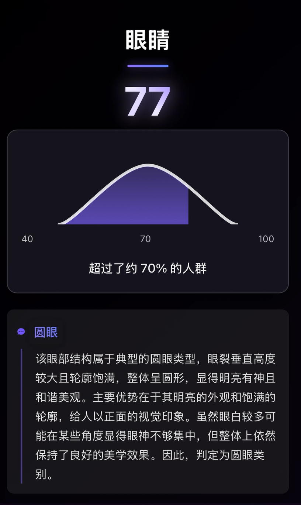
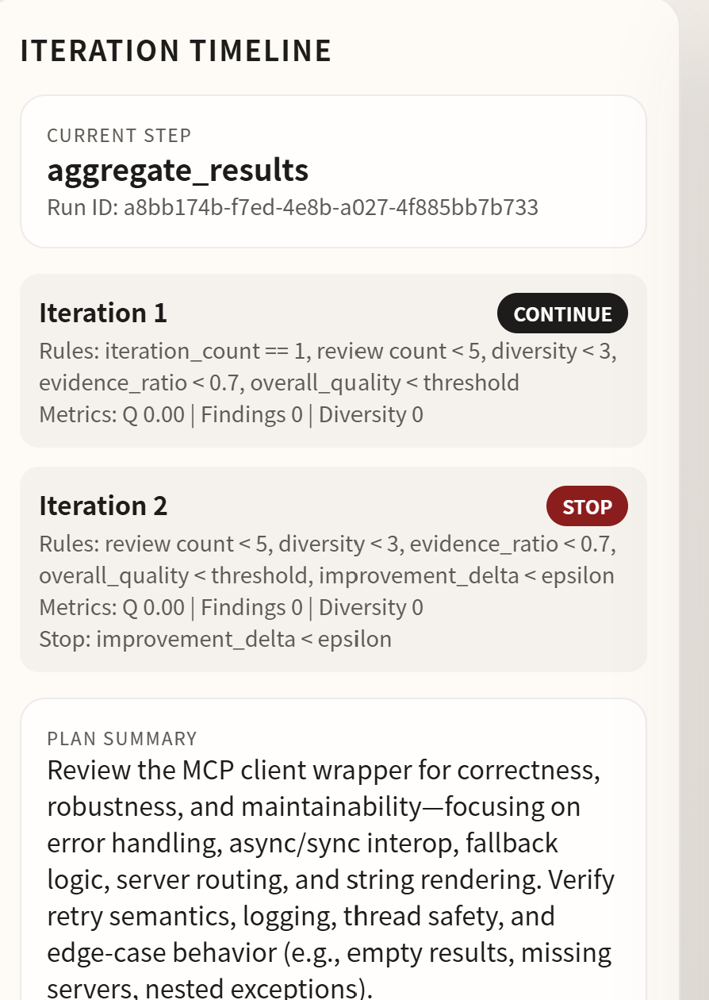

颜知 | 基于 AI 的面部美学分析系统
我开发了一套面向正脸图像的多智能体、多模态面部美学分析系统，将计算机视觉、几何建模、基于大模型的推理以及 RAG 约束评分整合为统一、结构化的评估框架。系统以共享的结构化表示层为基础，让不同智能体围绕同一组视觉特征、 关键点、几何描述符与纹理线索进行协作分析，实现分层推理与模块化扩展。
项目概述
系统采用专门设计的多智能体架构，每个智能体针对特定部位执行专家级分析。所有智能体基于统一的 “结构化表示层”工作，从而支持共享表征、跨模块协同以及链式推理。
我进一步构建了基于 RAG 的评分框架，将大模型输出锚定到整理后的美学规则库与护肤 / 风格知识库上， 显著提升了输出稳定性、JSON 结构一致性，并降低了不同光照与用户图像风格下的生成波动。
整套系统部署在阿里云 uniCloud 上，形成具备生产可用性的端到端管线，包括：基于 Uni-app （Vue3 + TypeScript）的跨端前端、Node.js 云函数推理调度、异步任务队列、内容安全校验、云端持久化、 热更新发布与可扩展的云原生架构。
截图区域

系统架构图
上传 / 等待 / 结果页
Pinia + Storage
任务创建 / 状态查询 / 结果回写
历史查询 / 补偿写入
任务表 / 历史表
图像上传 / 安全访问
对齐 / 归一化
脸型 / 眼部 / 鼻部 / 唇部 / 肤质
特征图 / 关键点 / 几何描述 / 纹理线索
脸型 / 眼部 / 鼻部 / 嘴部 / 皮肤
评分规则 / 风格与护肤建议
JSON 评分与建议
我的贡献
- 主导多智能体美学分析架构设计，定义五类专用智能体的任务角色、结构化输入与协作流程。
- 设计并实现统一的结构化表示层，整合特征图、人脸关键点、几何描述符与轻量纹理线索。
- 构建基于 RAG 的评分框架，将大模型输出锚定到美学规则库和护肤 / 风格知识库，显著提高跨样本一致性。
- 在 uniCloud 任务队列上实现云端异步推理调度，支持长耗时多模态评估、分布式任务处理与稳定结果持久化。
- 实现 OSS 签名上传与安全回取链路，保障前端与云端推理层之间的图像访问安全与可追踪性。
- 构建强化版结构化输出解析器，结合 JSON 解析与正则回退逻辑，处理多模态大模型不稳定输出。
- 设计可解释评分可视化界面，并开发演示级视频生成模块，用于展示面部结构与多角度对比。
- 集成 Qwen-VL Max 与 LangChain，支持多步推理、链式分析与可扩展的多智能体协作。
项目成效
Fintech | 多因子量化交易系统（基于 XtQuant）
该项目实现了一套基于 XtQuant（MiniQMT）的全自动多因子量化交易系统，形成从实时行情接入、因子计算、信号生成、 风险控制、自动下单执行到绩效监控的完整工程闭环。所有结果均由系统自身的因子模型、风险模块与执行引擎驱动， 不依赖主观人工决策。
绩效概览
系统架构
架构说明
- 主交易路径覆盖 MiniQMT / xtdata 行情接入、策略核心、多因子评估、xttrader 执行和券商成交落地。
- 事件总线统一分发报价更新、执行回报与订单回调，以异步方式触发策略与执行调整。
- 常驻监控层负责订单状态跟踪、组合敞口更新、盈亏 / 回撤 / 滑点观测，以及审计日志和定期报表。
- 整体设计兼顾响应速度、系统鲁棒性与合规可追踪性。
我的贡献
- 设计完整多因子策略框架，并将交易逻辑实现为模块化、可复现的工程组件。
- 搭建基于 XtQuant 的全链路系统：数据接入 → 因子计算 → 信号生成 → 风控 → 执行 → 分析。
- 实现 `xtdata` 集成，包括实时订阅、历史数据归一化、缺口补全与事件流抽象。
- 开发因子与信号引擎，覆盖趋势、波动、成交量、强度排序与稳定化逻辑。
- 设计完整风控体系，包括敞口限制、动态止损与回撤保护。
- 实现 `xttrader` 执行引擎与订单状态机，用于自动化实盘交易。
- 构建监控仪表与分析工具，增强系统可解释性与模型审计能力。
- 通过统一策略核心与适配器式执行层，保证回测、仿真与实盘之间的一致性。
项目影响
Code-Review Agent
该项目实现了一套轻量级多智能体代码评审系统，前端基于 React，后端使用兼容 LangChain 的阿里通义千问模型包装层。 系统围绕共享状态机构建了五类专用智能体：思考、执行、观察、决策和结果聚合。通过迭代生成、验证与修正，这些智能体协同产出结构化、 高质量的代码评审报告。当前版本是一个不依赖外部工具的原型，但整体架构已经具备模块化、透明化与未来扩展能力。
截图区域
